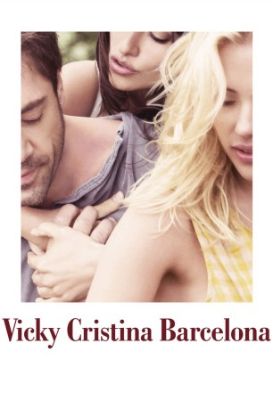
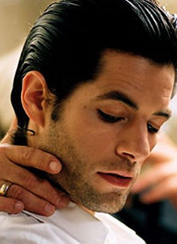

#10598 Vicky Cristina Barcelona
Auszeichnungen: 1 Oscars gewonnen 1 GoldenGlobes gewonnen 1 BAFTA-Awards gewonnen
 
 IMDB-Wertung: 7.1 / 10
IMDB-Wertung: 7.1 / 10  Tomatometer: 81
Tomatometer: 81  Metascore: 70
Metascore: 70 
Der Maler Juan Antonio Gonzalo lebt in Barcelona und trauert seiner letzten Beziehung mit María Elena nach. Auf einer Ausstellung lernt er die US-amerikanischen Touristinnen Cristina und Vicky kennen, die ihren Sommerurlaub in Spanien verbringen. Er lädt sie zu einem Wochenende in Oviedo ein. Vicky, die kurz vor ihrer Hochzeit steht, ist anfangs sehr ablehnend und möchte nicht mitkommen. Nur ihrer Freundin Cristina zuliebe, die fasziniert von der direkten Art Juan Antonios ist, willigt sie ein. An diesem Wochenende funkt es zunächst zwischen Cristina und Juan Antonio. Bald entdeckt auch Vicky ihr Interesse an dem Maler.
Jahr: 2008
Dauer: 96 Minuten
FSK: 6
Land: Spanien Studio: Concorde Home EntertainmentTonspuren:
Untertitel: Deutsch,
Auflösung: 1080p (1920x1040) Größe: 8069 MB
Genre: Drama, Liebe
Regisseur:  Woody Allen
Woody Allen
Drehbuch: Woody Allen
Soundtrack:
Darsteller:
 Rebecca Hall als Vicky
Rebecca Hall als Vicky Scarlett Johansson als Cristina
Scarlett Johansson als Cristina Christopher Evan Welch als Narrator
Christopher Evan Welch als Narrator Chris Messina als Doug
Chris Messina als Doug Patricia Clarkson als Judy
Patricia Clarkson als Judy Kevin Dunn als Mark
Kevin Dunn als Mark-  Julio Perillán als Charles
 Javier Bardem als Juan Antonio
Javier Bardem als Juan Antonio- Josep Maria Domènech als Julio
- Joel Joan als Juan Antonio's Friend
 Penélope Cruz als Maria Elena
Penélope Cruz als Maria Elena Pablo Schreiber als Ben
Pablo Schreiber als Ben Carrie Preston als Sally
Carrie Preston als Sally Zak Orth als Adam
Zak Orth als Adam- Abel Folk als Jay
- Joan Pera als Art Gallery Guest (uncredited)
- Rodrigo Rojas als Party Guest (uncredited)
- Juan Quesada als Guitarist in Barcelona
- Ricard Salom als Art Gallery Guest
- Maurice Sonnenberg als Art Gallery Guest
- Manel Barceló als Doctor
- Emilio de Benito als Guitarist in Asturias
- Jaume Montané als Juan Antonio's Friend
- Lloll Bertran als Juan Antonio's Friend
- Sílvia Sabaté als Juan Antonio's Friend
- Jordi Basté als Art Gallery Guest (uncredited)
- Christian Caner als Party Guest (uncredited)
- Paco Mir als Art Gallery Guest (uncredited)
- Oliver Moon als Party Guest (uncredited)
Datei: X:\NEU\Vicky Cristina Barcelona (2008, FSK6, 1920x1040).mkv seit 29.01.2019
 Es gibt insgesamt 187 Filme in der Gruppe 'NEU'
Es gibt insgesamt 187 Filme in der Gruppe 'NEU'